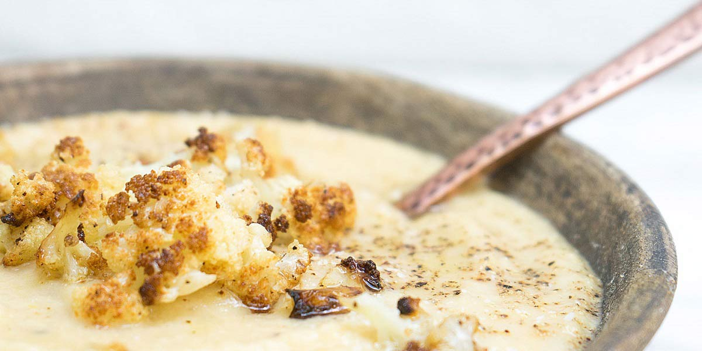

Cream of Cauliflower Soup
Recipe Specification
Ingredients List
| Ingredients | Quantity |
|---|---|
| Unsalted Butter | 30g |
| Olive Oil | 25ml |
| Cauliflower | 1 large head |
| Maris Piper Potato | 4x1 |
| White Onion | 1x1 |
| Vegetable stock | 1.5 Litres |
| Whole Milk | 750ml |
| Double Cream | 176ml |
| Salt & Pepper | To Taste |
Yield: 10-12 portions
Preparation
- Peel and slice white onions.
- Prepare cauliflower by removing florets from stalk and cutting into equally sized pieces.
- Peel and cut potato into equally sized pieces.
Cooking Instructions
- Place a large saucepan over a medium/high heat and add the vegetable oil and butter.
- Add the sliced onion, cauliflower and potatoes. Cook for 10 minutes and occasionally stir until vegetables are soft.
- Add vegetable stock, bring to the boil and reduce to the simmer. Cook for 15-20 minutes.
- Add Milk and double cream before blending in a food processor or using a hand blender.
- Pass through a chinois and remove any big bits before returning to the saucepan.
- Season to taste and serve.

Serving Suggestions
The soup goes well with crusty bread and lots of butter or garlic crotons.
Storing instructions
Allow to cool to room temperature before placing in an airtight container and placing in the fridge. Consume within 4 days of making it.
Reheating Instructions
Gently bring back up to temperature in saucepan on stove. Alternatively, warm in microwave for 3 minutes, stirring every 1 minute to ensure even warming.